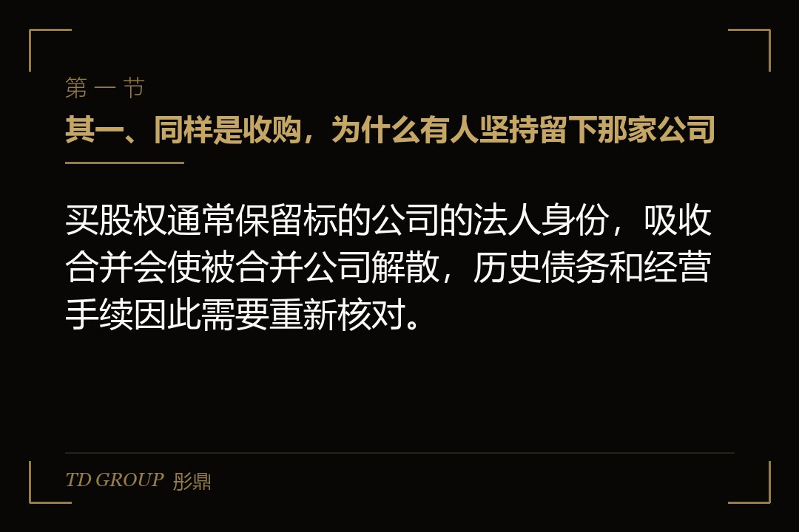
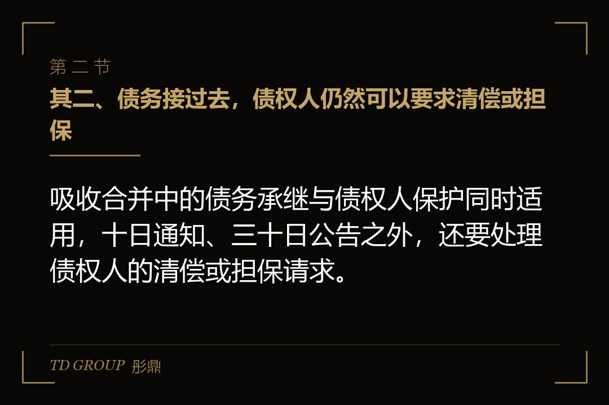
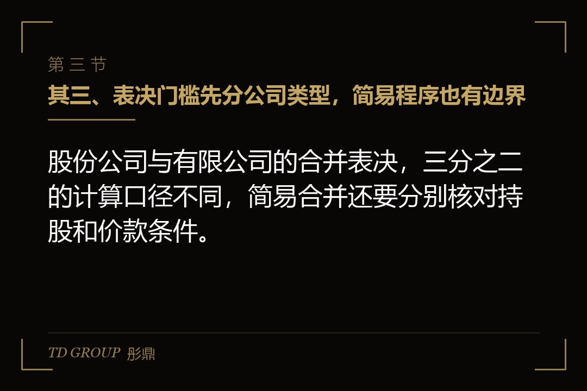

其一、买的是股权，还是把那家公司整个装进来

结论先行：收购与吸收合并的分界只有一条——交易做完之后，被买的那家公司还在不在，这一条决定了后面要过几道关。
假设有家在深市主板上市的环保设备公司，做工业废气治理，总股本六亿股。它看上了一家做催化剂材料的公司，对方年收入三亿多元，两家的产品线正好接得上，董事长的原话是「这块我们自己做要三年」。
谈到方案那一步，摆在桌上的是两条路。一条是买股权：花钱买下对方的全部股权，对方成为上市公司的全资子公司，法人还在，营业执照还在，资质证照还挂在它自己名下，账也还是单独一套。
另一条是吸收合并：上市公司作为存续方，把对方整个并进来；合并完成后对方解散、法人资格注销，它的全部资产、负债、业务和人员，都落到上市公司这一个主体名下。
这两条路在合并报表上看差别不大——买股权是并表，合并是直接入账，年底出来的数字很接近。差别全在法律主体那一层，而这一层会一路传导到债权人、员工、资质、税，还有那些不同意这件事的股东。
那家环保设备公司起先选的是买股权，理由是简单。谈到第四个月，财务总监算了一笔账：并进来之后光是两套账、两套体系、两班财务人员，一年就要多花几百万元，而催化剂那条产线本来就要搬进上市公司的厂区。他们改了方案。
这一篇就按这条主线拆：主体注销之后债和证照分别去了哪里，股东会与债权人各是一道什么样的关，换股比例怎么定，不同意的股东能拿到什么，税上有哪两条线，以及什么情况下老老实实买股权更划算。
其二、被合并的那家公司注销之后，债和证照分别去了哪里

结论先行：合并各方的债权债务由合并后存续的公司概括承继，但行政许可与经营资质不会跟着自动过户，要另外去办。
先说债。按公司法，公司合并时，合并各方的债权、债务，应当由合并后存续的公司或者新设的公司承继。这里用的词是「承继」，不是「转让」——它不需要一笔一笔征得每个债权人同意，合并生效那一刻整体过去。
这一点常被和减资混淆。减资那条程序里债权人有权要求公司清偿债务或者提供相应的担保，因为公司的偿债能力实实在在变小了；合并这边的逻辑不同，债务是被一个更大的主体接过去的，所以制度设计的重点是让债权人知道以后该找谁。
但「承继」也带来另一个后果：对方账上那些还没浮出来的东西也一起过来。未决诉讼、对外担保、欠税、没缴齐的社保、环保整改的后续义务——买股权时这些还关在子公司这个壳里，合并之后直接落到上市公司身上。
这是合并前尽调要比买股权做得更狠的原因。买股权时交割后发现问题，还可以靠陈述保证与赔偿条款在标的这一层找补；合并之后连那个可以找补的主体都没有了，赔偿只能向原来的股东追，而他们此时已经变成了上市公司自己的股东。
再说证照。营业执照会在合并登记里一并处理，但行政许可与经营资质是另一回事：危险废物经营许可、特种设备制造许可、各类生产许可，多数要按主管部门的规定办理变更或者重新申请，不因为合并就自动落到存续方名下。
实务里最伤的是时间差。合并已经生效，资质还在办，而那条产线在新证下来之前不能开工。所以方案排期必须倒过来做：先去问主管部门这几项资质能不能随合并变更、大概要多久，再回头定合并的生效日。
员工那一头反而简单。劳动合同法写得清楚：用人单位发生合并的，原劳动合同继续有效，由承继其权利和义务的用人单位继续履行。工龄连续计算，不需要重新签，也不存在「先解除再录用」这一步。
其三、股东会这一关：三分之二表决权，以及两条简易路径

结论先行：合并属于股东会特别决议事项，须经出席会议的股东所持表决权的三分之二以上通过，董事会自己定不了。
按公司法，公司合并、分立、解散、变更公司形式，以及增减注册资本、修改章程，都属于须经三分之二以上表决权通过的事项。注意它算的是「出席会议的股东所持表决权」，不是全部总股本，这在股东出席率不高的公司里是两个差得很远的数。
对上市公司来说，这道门槛还要再叠一层：涉及关联方的，关联股东要回避表决；构成重大资产重组的，还要按重组规则走独立董事意见、审计与评估、董事会与股东会两级审议这一整套程序，一步都省不掉。
现行公司法给了两条简易路径，都是为了把没有实质意义的会省掉。一条是并进来所付的价款相对本公司净资产比例很低的，可以由董事会决议，不必召开股东会，公司章程另有规定的除外。
另一条是母公司吸收合并自己已经持股比例很高的子公司，被合并的那一方不必再开股东会，但应当通知其他股东，那些股东可以请求公司按合理价格收购其股权。两条路各自对应的具体比例，以现行公司法正式文本为准。
这两条对上市公司整理内部层级特别有用。不少上市公司底下压着一串历史遗留的子公司、孙公司，注销要走清算程序，转让又要缴税，吸收合并加上简易程序，是把层级压平最省力的一条路。
回到那家环保设备公司：它要并的是一家外部公司，两条简易路径都用不上，股东会必须开，而且因为交易规模构成重大资产重组，前面那一整套程序要完整走一遍，时间表要按这个排。
其四、债权人这一关：十日通知，三十日公告
结论先行：合并决议作出之日起十日内通知债权人、三十日内公告，这两个时点是硬的，办不完就办不下合并登记。
公司法定的程序是：合并各方签订合并协议，编制资产负债表及财产清单；自作出合并决议之日起十日内通知债权人，并于三十日内在报纸上或者国家企业信用信息公示系统公告。
「通知」和「公告」是两件事，都得做。通知是点对点的，发给你知道的每一个债权人；公告是对不特定对象的，覆盖那些你不知道或者联系不上的。只做公告不做通知，程序上是有瑕疵的，而这个瑕疵会在登记那一关被挑出来。
这道程序看着像走过场，但它决定了后面市场监管部门那道合并登记能不能办下来。申请材料里要有通知的送达凭证和公告的刊登凭证，缺一样就会被退回，而退回意味着整个方案的时间表要重排一次。
真正要提前想的是银行。企业的借款合同里普遍写着主体合并、控制权变更这类条款，触发之后银行有权要求提前清偿或者重新审批授信。合并会把这些条款一次性全部触发，所以要在签合并协议之前，就一家一家去谈豁免函。
这一条在实务里的顺序常常被做反：先签协议、开股东会，等到通知债权人那一步才发现某家银行不同意，而此时方案已经公告，改也改不动。正确的顺序是先把大额债务那几家谈定，再把合并决议推上去。
那家环保设备公司真正卡住的就是这里。催化剂那家公司有一笔设备融资租赁，合同里写明主体合并须经出租方书面同意，谈了六周，代价是把剩余租金的付款节奏往前提了一年。
其五、换股比例：两个价格之比，以及那个定价基准日
结论先行：换股比例等于两家各自换股价格之比，而换股价格要先有一个定价基准日和一段参考期间才算得出来。
换股吸收合并的对价不是现金，是存续方新发的股份。被合并方的股东按一个比例把手里的股份换成存续方的股份，这个比例就是双方换股价格之比——存续方的换股价格作分母，被合并方的作分子。
存续方这一侧的定价有规则可依。按重组规则，上市公司发行股份的价格不得低于市场参考价的百分之九十，而市场参考价可以在董事会决议公告日前二十个、六十个或者一百二十个交易日的均价里选一个。选哪一段区间，本身就是方案设计的一部分。
被合并方那一侧分两种情况。它也是上市公司的，同样有交易价格可以做锚；它是非上市公司的，就要靠评估——收益法、资产基础法或者市场法，评估结论经审议之后作为换股价格的依据。
这里有一个常被忽略的连带条件：被合并方的作价如果用的是基于未来收益预期的方法，而交易对方又是控股股东、实际控制人或者其控制的关联人，那就要签明确可行的补偿协议。换股比例定高了，后面是要拿股份或者现金补回来的。
换股比例最后落成一个数字，但它真正的意思是两拨股东在合并后公司里的相对位置。原来的大股东会被稀释到什么程度、合并之后控制权有没有变、变了之后要不要再走收购那一套程序，这些要在定比例的同一张纸上一起算完，不能等定完再倒推。
存续方发出去的那部分股份还有锁定期安排，不同身份的股东期限不同，具体按重组规则办。这一条要在谈判早期就摆到桌面上，否则协议签完才发现有一段不短的锁定期，方案会被推倒重来。
其六、不同意的那些股东：现金选择权是方案安排，不是法定兜底
结论先行：现金选择权是由第三方按约定价格受让异议股东股份的一项方案安排，条件由方案定，不是一项固定的法定义务。
换股吸收合并有一个绕不开的现实：合并只要三分之二表决权通过就成立，通过之后，那些投了反对票的股东手里的股票也会按同一个比例换成另一家公司的股份。他们没有别的选择，除非方案给他们一个。
现金选择权就是那个选择。方案里约定一个价格，由第三方——通常是合并方的控股股东或者它指定的机构——向在股东会上投反对票、并且一路持有到实施日的股东，按这个价格受让其股份。行权是自愿的，不行权就照比例换股。
要点在于出钱的不是上市公司。如果由上市公司自己来收，性质就变成回购，要另走回购那一套程序和资金来源的限制；由第三方来提供，才能既给异议股东一条出路，又不动用上市公司的钱。
价格怎么定：常见做法是与换股价格用同一个定价基准日和参考期间，在此基础上给或者不给一点溢价。这个数字是谈出来的，各案不同，它既要让方案在股东会上过得去，又不能把提供方的敞口撑到承受不住。
敞口要按最坏情形算。理论上限是所有异议股东全部行权，提供方要准备的钱等于那部分股份乘以行权价格。实务里真正行权的比例通常远低于上限，但方案设计时必须按上限去备资金与作出承诺，不能按乐观情形去备。
还有一个容易被忘的角色：除了股东，被合并方可能还有持有可转换公司债、股票期权的人。这些工具在合并之后指向的标的变了，方案里要一并安排换股或者提前行权的路径，否则合并生效日会卡在这些人身上。
所以这一章的落点是：现金选择权不是给股东的福利，是方案设计者为了让这件事能通过而付出的成本，它要和换股比例放在一起算总账，不能分两次算。
其七、税这一关：股权支付的占比，和那两条十二个月的线
结论先行：企业合并的股权支付比例达到规定标准，并且满足两条十二个月的要求，才可以适用特殊性税务处理。
企业重组的所得税有两套处理。一般性税务处理是按公允价值确认转让所得或者损失，当期就要缴；特殊性税务处理是递延，交易发生时暂不确认所得，把计税基础按原来的口径接过去，等以后真处置了再说。
按企业重组所得税处理的现行规定，企业合并适用特殊性税务处理要同时满足几个条件：具有合理的商业目的，不以减少、免除或者推迟缴纳税款为主要目的；企业股东在合并发生时取得的股权支付金额，不低于其交易支付总额的百分之八十五；或者属于同一控制下且不需要支付对价的企业合并。
还有两条时间线，不少方案是栽在这里的。其一，重组后连续十二个月内，不改变重组资产原来的实质性经营活动；其二，取得股权支付的原主要股东，在重组后连续十二个月内，不得转让所取得的股权。
这两条把「合并完就把那条产线关掉」和「换到股份就找机会出手」这两个常见动作直接堵死了。方案在税务上算得再漂亮，只要十二个月内动了其中一样，特殊性税务处理就不成立，税要补回来，而那时候钱多半已经花出去了。
合并还有一个专属的好处：被合并企业合并前的相关所得税事项由合并企业承继，被合并企业尚未弥补的亏损，可以在规定的额度内由合并企业继续弥补。这个额度的算法是被合并企业净资产公允价值，乘以截至合并业务发生当年年末国家发行的最长期限的国债利率。
这条算法值得老板自己念一遍：它意味着一家账面亏损很大、但净资产不高的公司，合并过来能用掉的亏损其实非常有限。拿「对方有几个亿亏损可以抵税」当合并理由的，多半没有做过这个乘法。
其八、什么时候该走合并，什么时候老老实实买股权
结论先行：需要主体消失的时候走合并，需要风险留在一个壳里的时候买股权，这道选择题的全部内容就是这一句。
走合并的理由通常有三个：要把管理层级压平、要让业务和资质真正落到存续方名下、要用换股而不是现金来付对价。这三个里只要有一个成立，合并就比买股权更顺，省下的不只是钱，还有此后每一年的管理成本。
不走合并的理由也有三个：对方有说不清的历史问题、对方的关键资质在合并中变更起来风险太大、对方的小股东太散且不容易谈拢。这三个里只要有一个成立，买股权把风险关在子公司这个壳里，就是更稳的做法。
还有一种折中，用得比前两种都多：先买股权，把对方做成全资子公司，放一到两年，历史问题清干净、资质该变的变完，再走一次母子公司之间的吸收合并把层级压掉。那一步多半能用上简易程序，比一上来就合并轻得多。
时间上也有差别。买股权的节奏取决于交割条件，合并的节奏取决于那几个法定时点：十日通知、三十日公告、股东会、合并登记、资质变更。这几段压不动，方案排期只能按它们倒排，不能按董事长想要的日子排。
判断的落点只有一句：你要的是那家公司的资产和业务，还是那家公司这个主体本身消失。要资产和业务，两条路都到得了；要主体消失、债务归位、层级变干净，能走的就只有合并这一条。